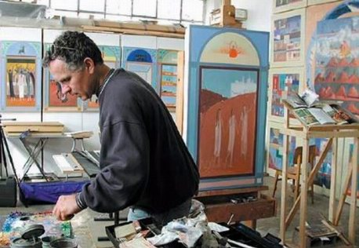
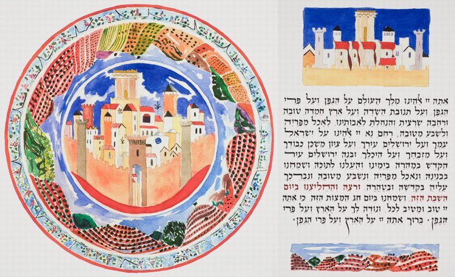
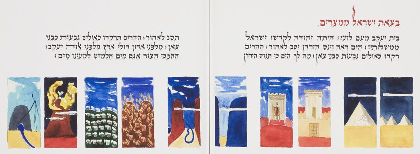
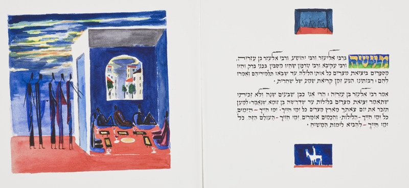
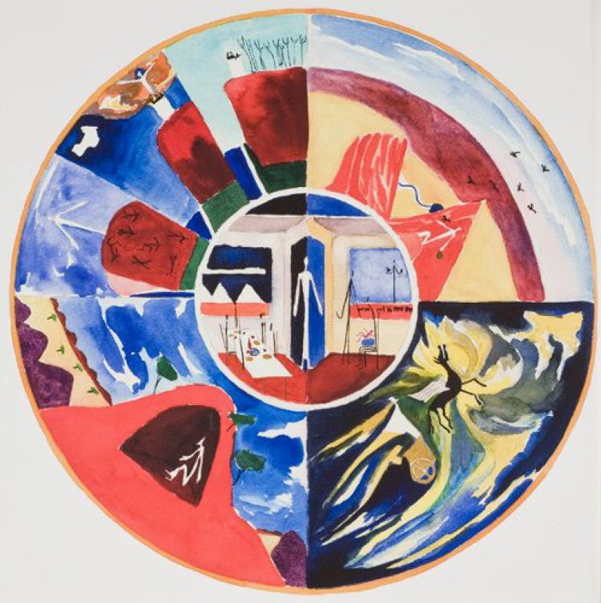

The Passover Haggadah. A Contemporary Art Midrash. Avner Moriah
In the colours of his works Avner Moriah often uses sky blue, orange and gold, the eternal colours of the Middle Eastern landscape.
Sources: library.yale.edu; translation: Ephraim Kalish

Avner Moriah was born in Jerusalem in 1953. He graduated from the Bezalel Academy of Art and Design in Jerusalem in 1980. In 1983 he graduated from the Yale School of Art, where he studied contemporary fine art. Moriah is known for his paintings of Israeli life and landscape, and also for his works for public buildings on Jewish and Israeli subjects.
He has not been afraid to take on difficult themes and often turns to Jewish history. He has made works connected with Israel's War of Independence of 1948 and the wars that followed, a series on the Shoah, and one on the expulsion of the Jews from Spain. Moriah's works have been acquired by the Metropolitan Museum, the Jewish Museum in New York, the Israel Museum, the United States Holocaust Memorial Museum in Washington and others.
The Passover Haggadah in Moriah's visual interpretation
"As models for the images of the Haggadah he turned to Egyptian and Assyrian wall paintings and reliefs, and to miniature figurines of people and animals from the Early Bronze and Iron Ages, the very time when the Israelites settled in Eretz Israel. In the colours of his works Avner Moriah often uses sky blue, orange and gold, the eternal colours of the Middle Eastern landscape.
There are several recurring images throughout the Haggadah: the image of freedom, the image of the family at the Seder table, and the Hand of God delivering the Israelites from slavery in Egypt. The rondo motif (a rondo is a musical form in which the main theme, the refrain, returns again and again, alternating with contrasting episodes) is often used in the Haggadah, representing the cyclical repetition of Jewish history and life."
The blessing of the Most High for the gift of the vine

Vignettes for the blessing: "Blessed art Thou, our God, King of the universe, for the vine and the fruit of the vine, and for the desirable, good and spacious land which Thou didst give to our fathers." The picture below the text shows the hills of Canaan covered with vines. The picture above shows Jerusalem. The roundel is made of two concentric circles with Jerusalem at the centre.
Israel's going out of Egypt

Ten pictures of the Exodus from Egypt. They are arranged in pairs from right to left: the Hand of the Most High delivering Israel from Egypt; the Sanctuary and the servants of God; the crossing of the parted Red Sea and of the Jordan; the Jews on the mountains and hills, like lambs and rams; God's presence on Mount Sinai, and Moshe bringing water out of the rock.
The rabbis in Bnei Brak

One of the episodes told in the Haggadah concerns five of the leading sages of the Land of Israel in the first centuries of the Common Era, who spent the whole night at the Passover table discussing the Exodus from Egypt. They lost track of time, so that their students had to remind them that the time had come for the morning prayer.
The cup of Eliyahu

In the outer ring of the rondo are four pictures of the prophet Eliyahu: being fed by the ravens in the wilderness; the challenge to the false prophets; hiding in the mountain (Horeb) after their slaughter on Mount Carmel; and the ascent to heaven in a chariot of fire. In the centre are two occasions of Eliyahu's return to earth: for the rite of circumcision and for the Passover Seder.
Other works by Avner Moriah


A panorama of Yerushalayim, Akko, The Olive Tree.
Video: